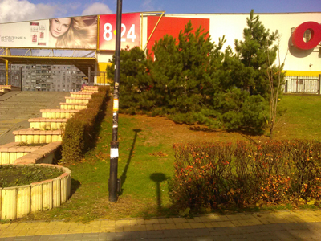
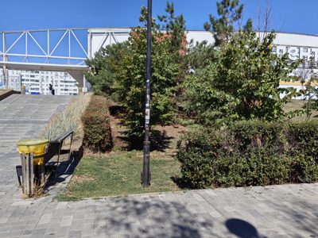

Сквер и ступеньки возле гипермаркета


Уже не помню, что именно толкнуло меня сделать первое фото в этом ракурсе. Было это в ноябре 2017 года. Глядя сейчас на это фото, я сам не вижу в нем ничего такого уж примечательного. Зато благодаря тому, что я сделал его тогда, сейчас можно сравнить как изменилось место, особенно в контексте того, что гипермаркет «Окей», который был там в 2017 году, в 2026 как раз закрылся, и его место занял гипермаркет «Лента».
Вправо от ступенек тянется вдоль здания гипермаркета небольшой скверик. Его кусочек как раз и видно на фото. И эта часть почти не изменилась. Разве что сосны стали пышнее. Фонарь так и стоит на своем месте. Даже объявлениями он обклеен сейчас примерно также как тогда.


Зато заметно поменялось оформление ступенек. Плитку на них меняли уже ни один раз. А несколько лет назад переделали боковые оградки. Сделали их чуть компактнее, оформили мелкими камешками вместо плиток, а на смену большим круглым клумбам сделали лавочки с мусорками. Правда лавочки и мусорки уже неплохо так пострадали от шаловливых ручонок не обремененных интеллектом граждан. А так-то новое оформление ступенек мне нравится, пожалуй, больше.